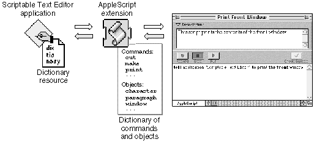

Dictionaries
To examine a definition of an object class, a command, or some other word supported by an application, you can open that application's dictionary from the Script Editor. A dictionary is a set of definitions for words that are understood by a particular application. Unlike other scripting languages, AppleScript does not have a single fixed set of definitions for use with all applications. Instead, when you write scripts in AppleScript, you use both definitions provided by AppleScript and definitions provided by individual applications to suit their capabilities.Dictionaries tell you which objects are available in a particular application and which commands you can use to control them. Typically, the documentation for a scriptable application includes a complete list of the words in its dictionary. For example, Appendix B of this book contains a complete list of the words in the Scriptable Text Editor dictionary. In addition, if you are using the Script Editor, you can view the list of commands and objects for a particular application in a Dictionary window. For more information, see Getting Started With AppleScript.
To use the words from an application's dictionary in a script, you must indicate which application you want to manipulate. You can do this with a Tell statement that lists the name of the application:
tell application "Scriptable Text Editor" print front window close front window end tellAppleScript reads the words in the application's dictionary at the beginning
of the Tell statement and uses them to interpret the statements in the Tell statement. For example, AppleScript uses the words in the Scriptable Text Editor dictionary to interpret the Print and Close commands in the Tell statement shown in the example.Another way to use an application's dictionary is to specify the application name completely in a simple statement:
print front window of application "Scriptable Text Editor"In this case, AppleScript uses the words in the Scriptable Text Editor dictionary to interpret the words in this statement only.When you use a Tell statement or specify an application name completely in
a statement, the AppleScript extension gets the dictionary resource for the application and reads its dictionary of commands, objects, and other words. Every scriptable application has a dictionary resource that defines the commands, objects, and other words script writers can use in scripts to control the application. Figure 2-2 shows how AppleScript gets the words in the Scriptable Text Editor's dictionary.Figure 2-2 How AppleScript gets the Scriptable Text Editor dictionary

In addition to the terms defined in application dictionaries, the AppleScript English dialect includes its own standard terms. Unlike the terms in application dictionaries, the standard AppleScript terms are always available. You can use these terms (such as If, Tell, and First) anywhere in a script. This manual describes the standard terms provided by the AppleScript English dialect.
The words in system and application dictionaries are known as reserved words. When defining new words for your script--such as identifiers for variables--you cannot use reserved words.